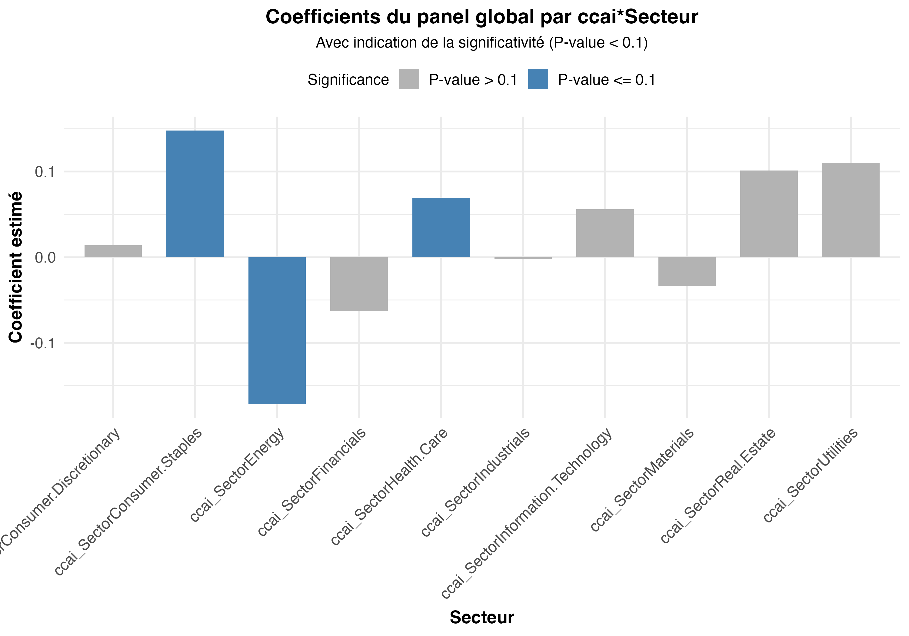
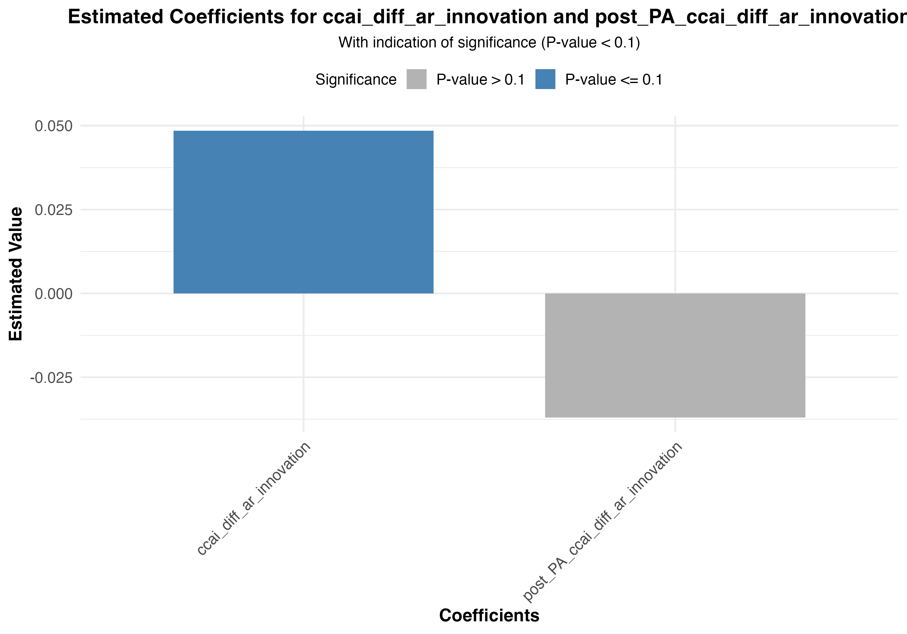
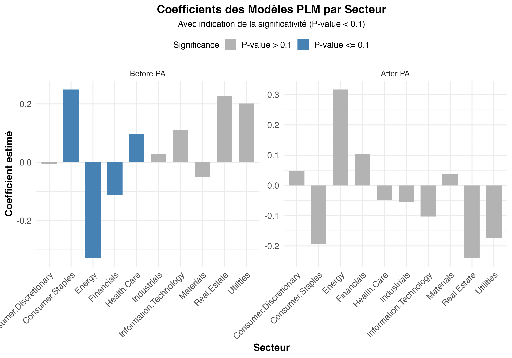
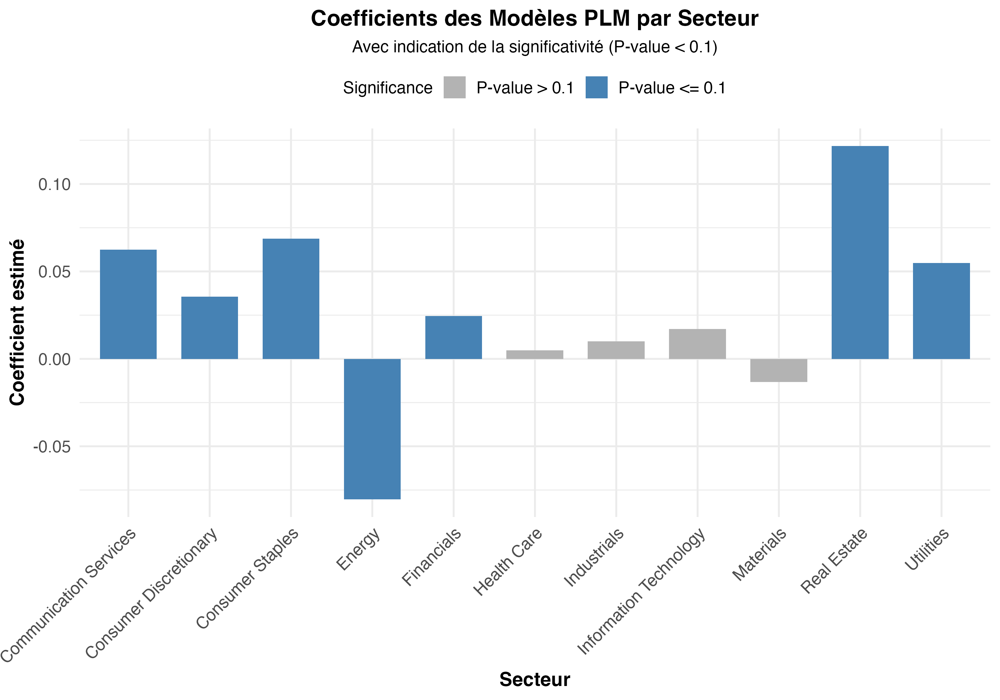
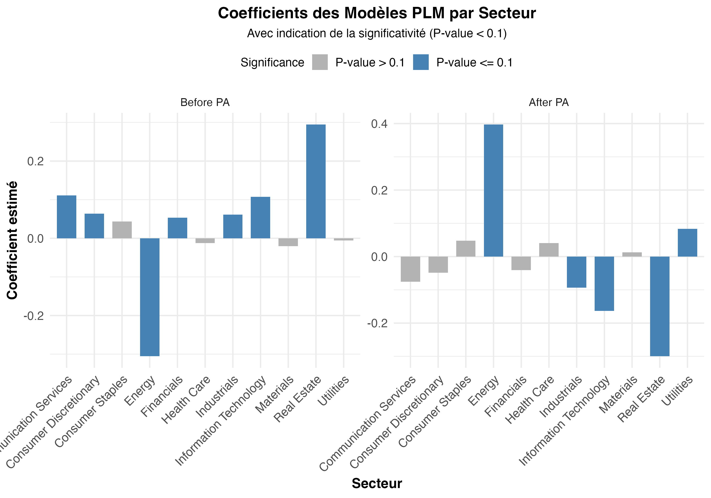

| Term | Estimate | Std. Error | t value | Pr(>|t|) |
|---|---|---|---|---|
| mkt_rf_3_weekly | 0.0101942 | 0.0001696 | 60.1054117 | 0.000 |
| smb_3_weekly | 0.0009393 | 0.0002337 | 4.0196005 | 0.000 |
| hml_3_weekly | 0.0022044 | 0.0001944 | 11.3387966 | 0.000 |
| rmw_5_friday | -0.0000398 | 0.0005644 | -0.0705874 | 0.944 |
| cma_5_friday | 0.0007179 | 0.0006243 | 1.1498839 | 0.250 |
| ccai_diff_ar_innovation | 0.0267507 | 0.0178095 | 1.5020451 | 0.133 |
Présentation des résultats
Equation 1
Equation :
\[\begin{multline} r_{i,t}-r_t^f=\alpha+\beta_{rm}.(r_t^m-r_t^f)+\beta_{SMB}.r_t^{SMB}+\beta_{HML}.r_t^{HML} + \beta_{RMW}.r_t^{RMW}+\beta_{CMA}.r_t^{CMA} \\ +\beta_{CCI}.CCI_t + \eta_s + \eta_i+\varepsilon_{i,t} \end{multline}\]Tableau :
Adjusted_R2 F_statistic
1 0.3484703 31594.09Equation 2
Equation :
\[\begin{multline} r_{i,t} - r_t^f = \alpha + \beta_{rm} (r_t^m - r_t^f) + \beta_{SMB} r_t^{SMB} + \beta_{HML} r_t^{HML} + \beta_{RMW} r_t^{RMW} + \beta_{CMA} r_t^{CMA} \\ + \sum_{s=1}^S \beta_{CCI}^s \mathbb{1}_{i \in s} CCI_t + \eta_i + \varepsilon_{i,t} \end{multline}\]Graphique : 
Secteur
ccai_SectorConsumer.Discretionary ccai_SectorConsumer.Discretionary
ccai_SectorConsumer.Staples ccai_SectorConsumer.Staples
ccai_SectorEnergy ccai_SectorEnergy
ccai_SectorFinancials ccai_SectorFinancials
ccai_SectorHealth.Care ccai_SectorHealth.Care
ccai_SectorIndustrials ccai_SectorIndustrials
ccai_SectorInformation.Technology ccai_SectorInformation.Technology
ccai_SectorMaterials ccai_SectorMaterials
ccai_SectorReal.Estate ccai_SectorReal.Estate
ccai_SectorUtilities ccai_SectorUtilities
Coefficient Pvalue
ccai_SectorConsumer.Discretionary 0.014014785 0.74475440
ccai_SectorConsumer.Staples 0.148015285 0.01735741
ccai_SectorEnergy -0.171713495 0.09687746
ccai_SectorFinancials -0.062959008 0.13185029
ccai_SectorHealth.Care 0.069298610 0.08066139
ccai_SectorIndustrials -0.001922126 0.95174808
ccai_SectorInformation.Technology 0.055785999 0.25973129
ccai_SectorMaterials -0.033680125 0.48366392
ccai_SectorReal.Estate 0.101326199 0.21535983
ccai_SectorUtilities 0.110080678 0.23397384 Adjusted_R2 F_statistic
1 0.3487115 12650.75Equation 3
Equation :
\[\begin{multline} r_{i \in t} - r_t^f = \alpha + \beta_{rm} (r_t^m - r_t^f) + \beta_{SMB} r_t^{SMB} + \beta_{HML} r_t^{HML} + \beta_{RMW} r_t^{RMW} + \beta_{CMA} r_t^{CMA} + \beta_{CCI} CCI_t + \\ \mathbb{1}_{t > PA} \left( \hat{\alpha} + \hat{\beta}_{rm} (r_t^m - r_t^f) + \hat{\beta}_{SMB} r_t^{SMB} + \hat{\beta}_{HML} r_t^{HML} + \hat{\beta}_{RMW} r_t^{RMW} + \hat{\beta}_{CMA} r_t^{CMA} + \hat{\beta}_{CCI} CCI_t \right) \\ + \eta_s + \eta_i + \varepsilon_{i,t} \end{multline}\]Graphique : 
Coefficient Estimated_Value
ccai_diff_ar_innovation ccai_diff_ar_innovation 0.04850276
post_PA_ccai_diff_ar_innovation post_PA_ccai_diff_ar_innovation -0.03697840
Pvalue
ccai_diff_ar_innovation 0.01021503
post_PA_ccai_diff_ar_innovation 0.23824159 Adjusted_R2 F_statistic
1 0.34912 15842.03Equation à érire
Equation :
\[\begin{multline} r_{i \in t} - r_t^f = \alpha + \beta_{rm} (r_t^m - r_t^f) + \beta_{SMB} r_t^{SMB} + \beta_{HML} r_t^{HML} + \beta_{RMW} r_t^{RMW} + \beta_{CMA} r_t^{CMA} + \sum_{s=1}^S \beta_{CCI}^s \mathbb{1}_{i \in s} CCI_t + \\ \mathbb{1}_{t > PA} \left( \hat{\alpha} + \hat{\beta}_{rm} (r_t^m - r_t^f) + \hat{\beta}_{SMB} r_t^{SMB} + \hat{\beta}_{HML} r_t^{HML} + \hat{\beta}_{RMW} r_t^{RMW} + \hat{\beta}_{CMA} r_t^{CMA} + \sum_{s=1}^S \hat{\beta}_{CCI}^s \mathbb{1}_{i \in s} CCI_t \right) \\ + \eta_i + \varepsilon_{i,t} \end{multline}\]Graphique : 
Equation 4
Equation :
\[\begin{multline} r_{i \in s, t} - r_t^f = \alpha + \beta_{rm}^s (r_t^m - r_t^f) + \beta_{SMB}^s r_t^{SMB} + \beta_{HML}^s r_t^{HML} + \beta_{RMW}^s r_t^{RMW} \\ + \beta_{CMA}^s r_t^{CMA} + \beta_{CCI}^s CCI_t + \eta_i + \varepsilon_{i,t} \end{multline}\]Graphique : 
Secteur Valeur
Health Care Health Care ccai_diff_ar_innovation
Industrials Industrials ccai_diff_ar_innovation
Information Technology Information Technology ccai_diff_ar_innovation
Financials Financials ccai_diff_ar_innovation
Consumer Staples Consumer Staples ccai_diff_ar_innovation
Utilities Utilities ccai_diff_ar_innovation
Materials Materials ccai_diff_ar_innovation
Real Estate Real Estate ccai_diff_ar_innovation
Consumer Discretionary Consumer Discretionary ccai_diff_ar_innovation
Energy Energy ccai_diff_ar_innovation
Communication Services Communication Services ccai_diff_ar_innovation
Coefficient Pvalue Adjusted_R2 F_statistic
Health Care 0.004917469 7.244667e-01 0.2806138 3028.6642
Industrials 0.009998868 5.804640e-01 0.4218963 6475.9435
Information Technology 0.017097385 2.105061e-01 0.3912422 4722.6965
Financials 0.024420530 3.503463e-02 0.4569050 7465.4030
Consumer Staples 0.068787872 1.099611e-04 0.2252747 1249.6761
Utilities 0.054801821 1.796024e-06 0.2897382 1583.4540
Materials -0.013169674 5.467275e-01 0.4059610 2178.8792
Real Estate 0.121654977 1.207072e-09 0.3891593 2561.3063
Consumer Discretionary 0.035588363 4.839595e-02 0.3677839 3548.7936
Energy -0.080322143 4.736269e-03 0.3877234 1579.9555
Communication Services 0.062459679 2.205919e-02 0.3037574 967.5256Equation 5
Equation :
\[\begin{multline} r_{i \in s, t} - r_t^f = \alpha + \beta_{rm}^s (r_t^m - r_t^f) + \beta_{SMB}^s r_t^{SMB} + \beta_{HML}^s r_t^{HML} + \beta_{RMW}^s r_t^{RMW} + \beta_{CMA}^s r_t^{CMA} + \beta_{CCI}^s CCI_t + \\ \mathbb{1}_{t > PA} \left( \hat{\alpha} + \hat{\beta}_{rm}^s (r_t^m - r_t^f) + \hat{\beta}_{SMB}^s r_t^{SMB} + \hat{\beta}_{HML}^s r_t^{HML} + \hat{\beta}_{RMW}^s r_t^{RMW} + \hat{\beta}_{CMA}^s r_t^{CMA} + \hat{\beta}_{CCI}^s CCI_t \right) \\ + \eta_i + \varepsilon_{i,t} \end{multline}\]Graphique : 
Secteur Period Coefficient
Health Care1 Health Care Before PA -0.012424800
Health Care2 Health Care After PA 0.040592077
Industrials1 Industrials Before PA 0.061244210
Industrials2 Industrials After PA -0.093380517
Information Technology1 Information Technology Before PA 0.107273906
Information Technology2 Information Technology After PA -0.163629433
Financials1 Financials Before PA 0.053157008
Financials2 Financials After PA -0.040438958
Consumer Staples1 Consumer Staples Before PA 0.043307329
Consumer Staples2 Consumer Staples After PA 0.047471434
Utilities1 Utilities Before PA -0.005418056
Utilities2 Utilities After PA 0.083312670
Materials1 Materials Before PA -0.020455629
Materials2 Materials After PA 0.012884218
Real Estate1 Real Estate Before PA 0.294778153
Real Estate2 Real Estate After PA -0.299582532
Consumer Discretionary1 Consumer Discretionary Before PA 0.063609029
Consumer Discretionary2 Consumer Discretionary After PA -0.048796584
Energy1 Energy Before PA -0.305322732
Energy2 Energy After PA 0.397322529
Communication Services1 Communication Services Before PA 0.111179517
Communication Services2 Communication Services After PA -0.075419718
Pvalue Adjusted_R2 F_statistic
Health Care1 5.659632e-01 0.2813573 1519.7195
Health Care2 1.840111e-01 0.2813573 1519.7195
Industrials1 7.622732e-02 0.4246835 3274.7840
Industrials2 2.222937e-02 0.4246835 3274.7840
Information Technology1 2.095119e-06 0.3926389 2374.9039
Information Technology2 2.313997e-07 0.3926389 2374.9039
Financials1 1.629027e-02 0.4599943 3779.0124
Financials2 1.413552e-01 0.4599943 3779.0124
Consumer Staples1 1.138904e-01 0.2291282 638.5548
Consumer Staples2 2.115380e-01 0.2291282 638.5548
Utilities1 7.293538e-01 0.3057750 854.6297
Utilities2 3.370921e-06 0.3057750 854.6297
Materials1 5.355457e-01 0.4119634 1116.4820
Materials2 7.656410e-01 0.4119634 1116.4820
Real Estate1 1.597238e-20 0.3975163 1325.9701
Real Estate2 2.114525e-20 0.3975163 1325.9701
Consumer Discretionary1 2.926939e-02 0.3684227 1778.9851
Consumer Discretionary2 2.314711e-01 0.3684227 1778.9851
Energy1 1.255359e-22 0.4234561 915.8880
Energy2 1.410752e-13 0.4234561 915.8880
Communication Services1 5.066483e-02 0.3059753 488.6320
Communication Services2 4.010354e-01 0.3059753 488.6320